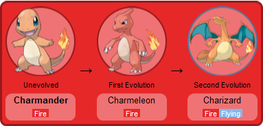

Aqui aprenderemos um pouco sobre a historia da região e alguns pokemons da area.
Kanto (em japonês: カントー地方, Kantō-chihō) é um país ou região fictícia da série Pokémon.
Sua geografia é baseada na região de Kanto, uma região da ilha de Honshu, no Japão, de onde vem seu nome.
É possível notar que as formações de baía, vistas no mapa do jogo, e as formações reais de Sagami Bay, Suruga Bay e a Baía de Tokyo são semelhantes.
Ao sul de Kanto estão localizadas as Ilhas Sevii e as Ilhas Laranja.
Hoenn, introduzido em Pokémon Ruby, Sapphire e Emerald, é supostamente localizado a seu sudoeste.
A norte localiza-se Sinnoh, e as regiões de Unova e Kalos encontram-se a oeste de Johto e Kanto.
A região de Alola, um arquipélago, localiza-se no sudeste do país.
Kanto é o cenário da primeira geração de jogos e pode ser explorado nas Gerações II, III, IV e VII.
O Professor Oak é o Professor Pokémon residente e oferece aos Treinadores Pokémon uma escolha entre Bulbasaur, Charmander ou Squirtle como seu primeiro Pokémon parceiro.
Em Pokémon Yellow, Oak pretendia dar ao jogador um Eevee, mas após seu neto Blue pegá-lo, ele dá ao jogador um Pikachu que ele havia acabado de capturar.
Em Pokémon: Let's Go, Pikachu!, o jogador escolhe Pikachu, enquanto em Pokémon: Let's Go, Eevee!, o jogador escolhe Eevee.
Nos jogos, o jogador começa sua jornada em Pallet Town e a termina no Indigo Plateau.
A arte dos primeiros jogos retrata Kanto como uma região de pradaria.
A partir da Geração III, é mostrado com uma cobertura arbórea mais densa.
Todas as cidades em Kanto são nomeadas após cores, com exceção de Pallet Town, que se refere a uma paleta, significando uma gama de cores.
Ao contrário de todas as outras regiões, o nome fictício de Kanto reflete seu nome no mundo real.
Kanto, região com muitos Pokémon, conta com grandes pesquisadores que utilizam da tecnologia para obter alguns novos.
Além de terem conseguido clonar Mew, porém em uma versão mais poderosa que passa a ser chamada de Mewtwo, conseguiram também criar o Porygon e reviver fósseis de Omanyte e Kabuto.
Nos jogos, seguimos como Red (Garoto) / Leaf (Garota) e obtemos o primeiro monstrinho no laboratório do professor Carvalho, tendo o direito de escolher entre os três oferecidos.
Antes de sair, o professor lhe entrega a Dex e pede ajuda para coletar dados dos Pokémon, e assim você parte em uma jornada capturando novos Pokémon, lutando contra outros treinadores, tentando intervir nos planos malignos da equipe Rocket e, ao mesmo tempo, conseguindo as 8 insígnias necessárias para participar da Liga, onde você precisa derrotar a Elite 4.
Após os quatro membros serem derrotados, você ainda precisará derrotar o campeão para que possa entrar no Hall da Fama.
A Elite 4 de Johto é no Planalto Indigo também, fazendo com que os jogadores saiam de Johto e vão para Kanto buscar a vitória na liga.
Charmander.

Em japonês, ヒトカゲ (Hitokage) significa ao pé da letra "Figura sombria", mas por outro lado, a tradução atribuída a Hitokage é "Hi" (fogo) e "Tokage" (salamandra). Ficando assim, algo como "Salamandra de Fogo".
No inglês, o nome é Charmander. "Char" vem de carbonizar ou queimar e "Mander" que vem de "Salamander", que significa salamandra. Ficando assim, quase igual ao nome japonês, "Salamandra Carbonizadora" ou "Salamandra que queima".
Charmander é descrito como o "Lizard Pokémon" ou Pokémon Lagarto. Charmander tem na ponta de sua cauda uma pequena chama que é a fonte de seus poderes e que queima intensamente, sem parar.
Dizem que o humor de um Charmander é medido de acordo com a intensidade de sua chama. No Animê, Brock relata que esse Pokémon poderia morrer se o fogo de sua cauda se apagasse, entretanto, em um outro episódio, Delia Ketchum, mãe de Ash, afirma que ele só ficaria impossibilitado de utilizar seus poderes.
Por esse motivo, o conceito da chama da cauda de Charmander é contraditório e incerto.
O pokémon possui duas evoluções chamadas respectivamente de Charmeleon e Charizard.

Bulbassauro.
Bulbasaur (フシギダネ Fushigidane?), chamado de Bulbassauro em português brasileiro,[1] é uma espécie fictícia pertencente à franquia Pokémon da Nintendo.
Apareceu pela primeira vez em 1996 nos jogos Pocket Monsters Red & Green, levados ao ocidente como Pokémon Red & Blue.
É um dos iniciais de Kanto, junto com Charmander, do tipo fogo, e Squirtle, do tipo água.
Bulbasaur é dos tipos Planta e Veneno, notoriamente percebível por conta da grande planta em suas costas e de sua coloração verde-água.
Sua classificação na Pokédex Nacional, Pokédex que merge todos os Pokémon de todas as regiões em uma, é #001.[2]
Bulbasaur é um dos Pokémon mais famosos de todos os tempos, tendo ganhado diversos brinquedos, pelúcias, fichas, cartas de TCG e até mesmo uma moeda comemorativa na ilha de Niue.[3]
Evolução:
Bulbassauro evolui para Ivyssauro no nível 16.
Ivysaur é um pouco maior que Bulbasaur e apresenta uma flor maior e mais desenvolvida em suas costas. Sua coloração verde se intensifica, e suas patas se tornam mais robustas.
Ivysaur se torna mais independente e territorial. Embora continue a ser amigável, ele pode ser mais protetor em relação ao seu espaço e às plantas ao seu redor. É mais ativo durante o dia, buscando a luz do sol.
Este estágio mantém a conexão com a natureza, mas mostra um aumento na determinação. Ivysaur é curioso e frequentemente explora seu ambiente em busca de novas plantas e recursos.
Ivyssauro evolui para Venusaur no nível 36.
Aparência: Venusaur é significativamente maior e possui uma grande flor aberta em suas costas. Suas cores são mais vibrantes, com tons de verde e rosa. Ele tem uma aparência majestosa e imponente.
Venusaur é mais calmo e sereno, mas também se torna um defensor feroz de seu território. Ele é capaz de se comunicar com outras plantas e Pokémon, estabelecendo uma harmonia em seu ambiente.
Neste estágio, Venusaur se torna um verdadeiro guardião da natureza. Ele é um símbolo de força e estabilidade, frequentemente buscando proteger ecossistemas e preservar a flora ao seu redor.
Squirtle.

Squirtle é um pequeno Pokémon com corpo azul, um casco marrom e grandes olhos redondos. Seu formato é arredondado, e ele tem uma cauda que se enrola para trás.
Squirtle é conhecido por ser brincalhão e enérgico. Ele gosta de nadar e é muitas vezes encontrado em ambientes aquáticos. Além disso, é bastante sociável e forma laços fortes com seus treinadores e outros Pokémon.
Este Pokémon é curioso e aventureiro, sempre em busca de novas experiências. Sua natureza amigável o torna fácil de treinar e popular entre os treinadores iniciantes.
Wartortle é um pouco maior que Squirtle, com orelhas mais longas e uma cauda mais volumosa. Seu casco se torna mais robusto, e ele apresenta uma pelagem mais clara nas patas.
Wartortle é mais sério e protetor em relação ao seu território. Embora ainda tenha um lado brincalhão, ele se torna mais cauteloso e maduro. É conhecido por nadar rapidamente e usar suas habilidades aquáticas em combate.
Este estágio demonstra uma conexão mais profunda com a água e a natureza. Wartortle é leal e disposto a defender aqueles que ama, tornando-se um verdadeiro amigo e aliado.
Blastoise
Blastoise é um grande Pokémon com um casco imponente e canhões de água saindo de seus ombros. Sua coloração é um azul mais escuro, e sua presença é bastante majestosa.
Blastoise é calmo e confiante. Ele se torna um defensor feroz de seu território e usa suas habilidades para proteger outros Pokémon e ambientes aquáticos. Sua força e poder fazem dele um oponente respeitado.
Neste estágio, Blastoise é um verdadeiro guardião das águas. Ele é sábio e experiente, frequentemente buscando formas de manter a harmonia em seu ambiente e proteger a vida aquática.